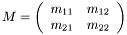

This library started life as a Matlab-only implementation, whose subroutines were then succesively transformed into C. Therefore, the C library is very closely modelled after the LWPR implementation in Matlab. Indeed, most Matlab functions (lwpr_*.m) have a C/MEX-equivalent.
For easy inter-operation, the data format of vectors and matrices used in this library is that of Matlab (or Fortran). That is, vectors are just arrays of doubles. Matrices are also 1-D arrays of doubles, with the elements stored in column-major order. A 2x2 matrix

is thus stored as
double M[4] = {m11,m21,m12,m22};
Apart from the using the C-library stand-alone or from Matlab, there is also a slim C++ wrapper, and a Python module. The C++ wrapper uses STL vectors, and the Python module uses NumPy arrays. LWPR models can be interchanged between all implementations via binary files (platform-dependent, see lwpr_binio.h) or XML files (see lwpr_xml.h).
In order to possibly exploit speedups using SSE2 on newer x86-machines, all internally stored vectors whose length is equal to the input dimensionality are aligned on 16 byte boundaries. This is also the case for the columns of matrices.
[1] Sethu Vijayakumar, Aaron D'Souza and Stefan Schaal, Incremental Online Learning in High Dimensions, Neural Computation, vol. 17, no. 12, pp. 2602-2634 (2005).
1.4.6